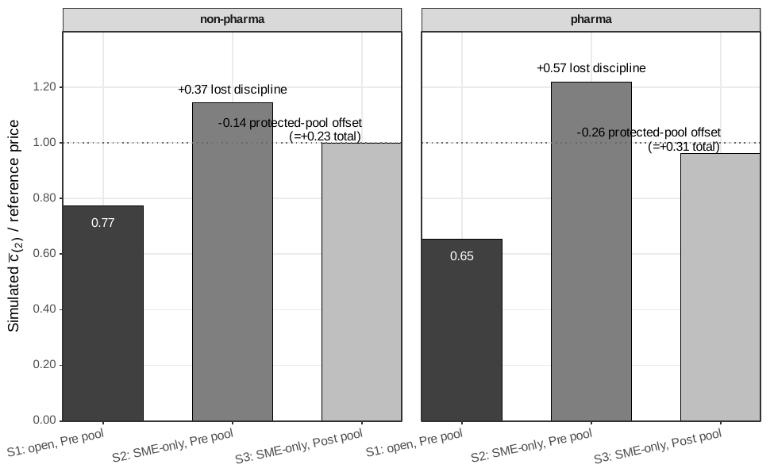
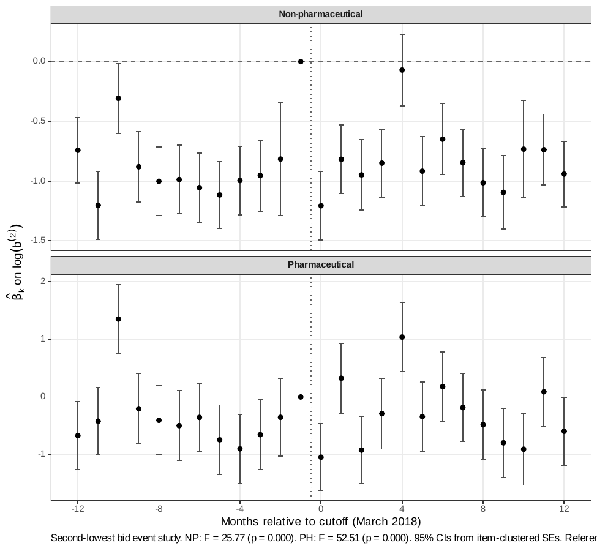
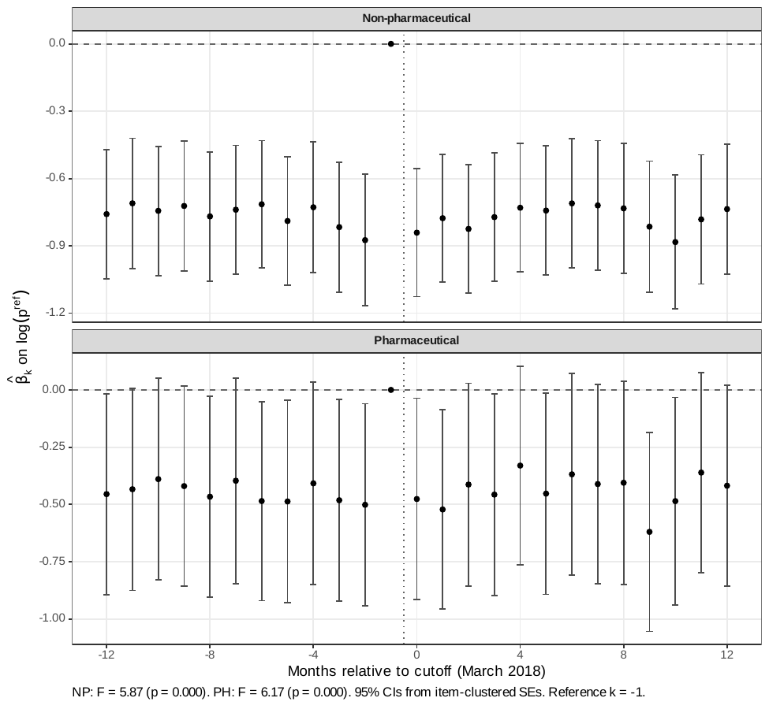

Main Results¶
The canonical results are the structural price-formation decomposition and
the static welfare comparison in paper.pdf. The reduced-form
difference-in-differences is reported as a timing, sign, and approximate-scale
benchmark, not as the source of the policy magnitude. All numbers on this page
are drawn from the v8 macro registry (v8-jpube/output/values.tex); the
underlying tables and figure are Tables 1–4 and Figure 1 of the
manuscript.
Intuition (plain-language)
Procurement prices are set by the fiercest bidders, and many of those are non-SMEs. A set-aside removes them, so the price should rise — and it does. The structural decomposition separates two forces: kicking non-SMEs out (lost discipline, +0.371 of the reference price) versus more SMEs crowding in to compensate (the protected-pool offset, −0.144). Exclusion wins about 72% of the contest, leaving a net price increase and a 28.9% static welfare loss in standardized goods. A 10% price preference would keep the disciplining bidders in the room at near-zero cost — so the real choice is exclude-rivals versus tilt-the-allocation.
28.9% static welfare loss from the full SME set-aside in standardized non-pharmaceutical procurement, at λ=0.30 — with the exclusion of non-SMEs accounting for ~72% of the absolute price decomposition
1. First-stage participation facts¶
The mechanism operates through the bidder pool, so the participation margins are the key first stage. After the March 2018 cutoff, SME-only adoption in Group 65 rises (state-level adherence reaches 43%, not full coverage), SME participation roughly doubles, non-SME participation falls, and winning prices move up. Because take-up is incomplete, post-period non-SME counts stay positive — the first stage is a sharp change in the bidder pool, not universal exclusion.
| Average bidders per auction | Non-pharma | Pharma |
|---|---|---|
| Pre: SME bidders | 0.94 | 0.55 |
| Pre: non-SME bidders | 2.68 | 2.61 |
| Post: SME bidders | 1.87 | 1.22 |
| Post: non-SME bidders | 1.50 | 1.66 |
| Change in SME bidders | +0.93 | +0.67 |
| Change in non-SME bidders | −1.18 | −0.95 |
Group 65 Pregão auctions, 18-month window on each side of the March 2018 cutoff, after the structural filters (\(c_\epsilon \in (0,3]\), at least 2 active firms). Table 1 in the manuscript.
The price-forming order statistic moves in the same direction. A DiD on \(\log b^{(2)}\) (the second-lowest bid, built from raw bid units with no reference-price normalization) is −0.039 (SE 0.021) in non-pharmaceuticals and −0.131 (SE 0.035) in pharmaceuticals, corroborating the order-statistic channel directly (Online Appendix OA-D.4).
2. Reduced-form price benchmark¶
The DiD compares Group 65 to 76 never-treated product groups, with item and month fixed effects, auction-format and log-quantity controls, PBU controls, and item-clustered standard errors. The coefficient uses a DiD-in-reverse convention: a negative coefficient on Group 65 × pre-period means the open regime was cheaper, so the post-cutoff SME-only extension undoes that discount.
| Window around cutoff | 6 months | 12 months | 18 months |
|---|---|---|---|
| \(g65 \times Pre\) on \(\log p^{\mathrm{final}}\) | −0.148 | −0.108 | −0.113 |
| Standard error | (0.014) | (0.013) | (0.012) |
| Observations | 219,535 | 439,054 | 649,714 |
Table 2 in the manuscript. The estimate is stable across windows and implies a 10–11% price movement. Modern estimators attenuate the magnitude relative to TWFE (Callaway–Sant'Anna −0.017 vs. TWFE −0.108), consistent with the conservative role assigned to the reduced form: it verifies timing and sign, not the structural magnitude.
The reduced form is a benchmark, not the headline
Group 65 is not balanced enough against the pooled controls to support a reduced-form-only design (7 of 9 pre-period covariates exceed the 0.10 normalized-difference threshold). The DiD establishes a real first-stage footprint around March 2018; the structural decomposition below estimates the price mechanism, and the welfare comparison does the policy work. See the Robustness page for the full threat assessment.
3. Price decomposition: exclusion vs. protected-pool offset¶
The set-aside changes the price-forming pool on two margins. It removes non-SMEs from eligible auctions (weakening the order statistic that disciplines price), and it changes the protected SME pool through additional participation and composition (pushing back). Three counterfactual auctions on the same product cells isolate the two channels:
- \(S_1\) — open auction, pre-policy bidder pool (the benchmark).
- \(S_2\) — SME-only, pre-policy SME pool held fixed (removes non-SMEs only).
- \(S_3\) — SME-only, observed post-policy SME pool.
The jump \(S_1 \to S_2\) is the lost competitive discipline from excluding non-SMEs; the decline \(S_2 \to S_3\) is the protected-pool offset; the remaining \(S_1 \to S_3\) gap is the realized price cost of the set-aside.
{kind=link}

| Class | \(S_1\) | \(S_2\) | \(S_3\) | \(S_2{-}S_1\) (excl.) | \(S_3{-}S_2\) (offset) | \(S_3{-}S_1\) (net) | Abs. excl. share |
|---|---|---|---|---|---|---|---|
| Non-pharma | 0.774 | 1.144 | 1.000 | +0.371 | −0.144 | +0.227 | 72.0% |
| Pharma (boundary) | 0.654 | 1.219 | 0.963 | +0.565 | −0.256 | +0.309 | 68.8% |
Table 3 in the manuscript. Prices are simulated \(E[c_{(2)}]\) normalized by the buyer reference price. "Abs. excl. share" is \(|S_2-S_1| / (|S_2-S_1| + |S_3-S_2|)\).
The protected pool responds, but exclusion dominates. In non-pharmaceutical supplies, removing non-SMEs while holding the SME pool fixed raises simulated prices by 0.371 of the reference price; the observed post-policy SME pool offsets that shock by only 0.144, leaving a net +0.227. The exclusion component is 72% of the sum of absolute component magnitudes — the dominant force is the loss of the non-SME price-forming pool, not a failure of protected firms to respond.
The ordering is not an artifact of how entry is modeled. Replacing the Poisson bidder-count draws with the empirical class-period-type count distributions attenuates net effects by roughly a quarter (net +0.171 non-pharma, +0.223 pharma) but leaves the exclusion shares large (69.4% non-pharma, 63.1% pharma; Online Appendix OA-D.2). Strict invariance — forcing the post-policy SME distribution to equal the pre-policy one — raises the exclusion share to 85% (non-pharma) / 79% (pharma).
4. Static welfare and the price-preference benchmark¶
The simulated second-order statistic \(c_{(2)}\) determines the government's payment; the winner's cost \(c_{(1)}\) determines allocative efficiency. The static welfare loss of the full set-aside \(V_0\) relative to the open benchmark is allocative deadweight loss plus the MCPF distortion on the extra outlay (\(\lambda = 0.30\)). The benchmark \(V_3\) is a static 10% SME price preference: all firms remain eligible, SMEs get a 10% edge for winner selection, and the government pays the actual winning bid.
| Class | \(\Delta_{\mathrm{gov}}\) | DWL\(_{\mathrm{alloc}}\) | MCPF | Loss / \(p_{S_1}\) | \(\Delta p\) (10% pref) | SME win gain |
|---|---|---|---|---|---|---|
| Non-pharma | 0.247 | 0.148 | 0.074 | 28.9% | −0.004 | +4.3 pp |
| Pharma (boundary) | 0.298 | 0.207 | 0.089 | 44.8% | +0.002 | +1.4 pp |
Table 4 in the manuscript. All quantities in reference-price units; \(\lambda = 0.30\). Lower bootstrap endpoints remain economically large: 20.5% (non-pharma) and 34.9% (pharma).
- The full set-aside is costly on both margins. In standardized non-pharmaceutical procurement the total welfare loss is 28.9% of the open-regime price.
- The preference preserves the price-forming pool at near-zero static cost. Holding entry and recovered primitives fixed, the simulated price effect of a 10% preference is essentially zero (−0.004 non-pharma), while still raising the SME win-rate by 4.3 pp. Welfare costs stay negligible up to a 15% (NP) / 25% (PH) preference, and even a 30% preference costs only 4.99% / 1.92% of \(p_{S_1}\).
- How much must the planner value SME surplus? To prefer full exclusion to the 10% preference, the planner would need to value an extra real of SME surplus at more than 2.42× a real of general surplus (non-pharma; 2.61× pharma). Dynamic market-access and capacity gains are additional benefit-side terms not identified by this static exercise.
The comparison is therefore a frontier, not a ranking: set-asides buy more redistribution by removing rival bidders; preferences buy less redistribution while preserving the price-forming pool. Exclusion is warranted only when the planner is willing to pay for the missing competitive discipline.
5. Pharmaceuticals as a boundary case¶
Pharmaceutical procurement shows the same qualitative pattern at larger magnitudes, but it is reported as a boundary case, not a second headline. The protected pool is thinnest there, products are most heterogeneous, and post-policy composition turns over most: 61.9% of post-policy pharmaceutical SME firms are new (vs. 23.0% of bids in non-pharma), and the primitive-invariance diagnostic fails after the heterogeneity correction. Under strict invariance the pharmaceutical welfare ranking reverses while the non-pharmaceutical ranking does not — which is precisely the scope condition.
Supporting figures¶
{kind=link}

{kind=link}

Data and sample: BEC administrative microdata (SEFAZ/SP). Raw extract: 3.7M bid-level observations across 82,569 items, 832,984 purchase orders, and 1,344 public buyer units. Structural sample: 297,967 firm-auction observations across 97,993 Group 65 Pregão auctions (48,740 pre / 49,253 post), September 2016 – August 2019.